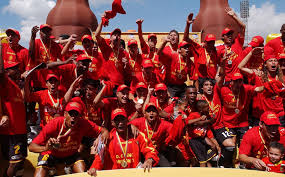

Club Deportivo Cuenca (Ecuador)

Club Deportivo Cuenca, mayormente conocido como Deportivo Cuenca,
es un club deportivo ecuatoriano originario de la ciudad de Cuenca,
fundado el 4 de marzo de 1971
Su disciplina principal es el fútbol en el que es parte de la Serie A de
Ecuador desde 1971. Su máximo logro ha sido ser campeón del Campeonato
Ecuatoriano de Fútbol 2004.
SEl club juega sus partidos de local en el Estadio Alejandro Serrano Aguilar,
el cual tiene una capacidad de 16 540 personas reglamentariamente y es propiedad
de la Federación Deportiva de Azuay.
Deportivo Cuenca - ROJO Y NEGRO.